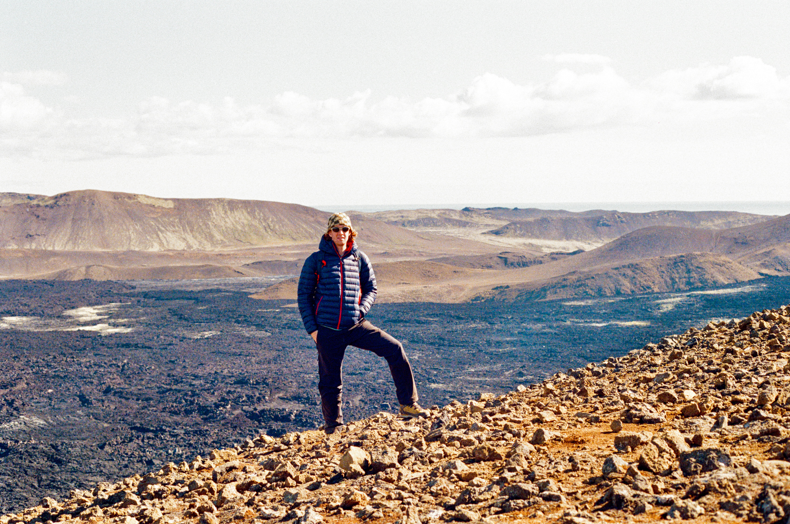

About Me
Henri is a 24-year old doctoral student of Geology at the University of Salzburg. He began his studies in October 2025 under the supervision of Jörg Robl in the Department of Geology.
Originally from Britain, Henri has just completed a two-year Master's programme at the Vrije Universiteit in the Netherlands, where over the course of those two-years his interests led to a specialisation in tectonic geomorphology, particularly in New Zealand and Southern Calabria.

Education
University of Salzburg, Department of Environment and Biodiversity, Division of Geology
PhD (dr.rer.nat), Doctor of Natural Science in Geology
October 2025 - March 2029
Vrije Universiteit Amsterdam, Department of Earth Sciences
MSc, Master of Science in Earth Sciences
September 2023 - June 2025
Liverpool Hope University, School of Computer Science and the Environment
BSc, Bachelor of Science in Physical Geography
September 2020 - June 2023
Experience
University of Salzburg, Faculty of Natural Science, Department of Geology
PhD Researcher
October 2025 - March 2029
Vrije Universiteit Amsterdam, Faculty of Science, Department of Earth Sciences
Student Assistant
July 2024 - April 2025